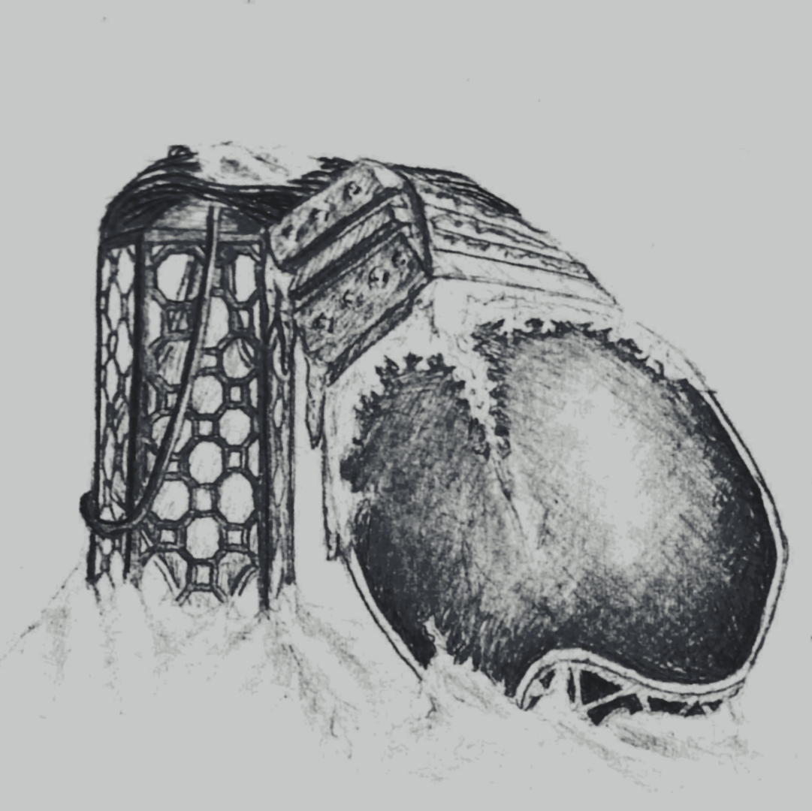

S I G N A L - E A T E R

T O R O I D - F O R E S T

N U L L I N G - L A T T I C E

S U N K E N - M O U N T A I N
A Ballad o Sundered Aengus
tap or hover to latinize


Awaiting Healing Damocles


An so unfolds same auld mistakes through lateral breaches ill-spaced, creating viscous flows an wakes o untold centuries unlaced. On watching pinholes at time's pace frae deepest o wells in dilate, these apertures frae lang dead space, wi parallax, parambulate. Specks o stars start switching off then as moth-filled void ootstrips my trance. Foremost orbs orbit held brisken three-body game caucht me in dance. Two, tichtly-bound, aroon revolve, One which lacks accretes frae other spinning disk it cannae dissolve leaving husk post-starcrossed nova. Postponed effects o distant blast at last expel me frae deep well wi knell o binary nau past, a lone zombie in extant shell. Nae the kind that's dying tae ficht, nor in search o ficht tae die in, I nae mind this entropic flicht, beyon recall, nae use trying. Nae grass tae touch, nae unformer tae absorb cracking joints in kind. What breaks down toroid transformer? What becomes o coil untwined, like string pulled far frae line o sicht, left unstrung on this frozen glen, ablow sky that's quartered by licht, ower cutting cold ben midden?

Mangled brain that's fain tae wane there, making choice that felt nae chosen: angled heap will there remain where freezing ower's best kept frozen. Through the cracks wi hollowy ring the lake below leaks up tae rays chasing me aff wi ret, warping electromagnetic displays. Faint aurorae stronger render my frame which fickle does harrow fae a sure abeien fender, windless place were I may tarrow - lest this greying blizzard astride mine shallow burrow enclosure test if vaccuum-hardened hert lied o lower limits I'd endure. Pathetic clutching at ma knees, anthetical tae welcomed view o your lantern raised on the breeze, I hide my smile that then grew frae truth I keep deep in my throat there's nothing that I'd rather see than distant shine, that tiny mote, o someone oot there lookin fae me. But crystals bind my neck bent low where snowflakes fell upon shoulders the ice translucent disnae show it chokes oot flame that still smoulders. You left, barely a look askance, but kennt I'd hurt much mare than you. Tae gie my warmth a fichtin chance, you left... but left a licht on too.
Through Disposable Iambus

A booming arrival, whistling fall, like many ave travelled afore, sings out as siren looming call fae saddened an sorry encore o puir an wobbly stagger I manage as I disinter, as if already a tremor does sift me oot o this winter. An lifted free wi space to think on planes o anhedonia, my avolation holds at brink prolonged death-bed insomnia. Were I nae born an kept alive, succumbed, unable tae defy the call tae sleep I'd nae survive tae last past stars o days gane by. Were I tae die, I'd want it so: that meteor falls oot the sky, Nae blister bleedin at ma toe, salt whip-stung eyes an lips stane-dry. But wave o shock had reified, averted was cyclopic stare, that burning gaze struck mountain-side alit wi pyroclastic flare. Aware o naewhere else tae go an kennin rocks dinnae smoke so, the bare nicht gies me one mare show o fadin lichts last afterglow. An wading through knee-deep, wet snow, it strikes me an I sound a sigh, Is this solemn flaming arrow or does my ship still float on high?

Plot the path debris had charted, then on planes hilly an hollowed find me as shadow time parted frae what's linearly followed on projected path's cross-section winnae intent, enslaved tae curve (what's set frae first perturbation, initial states we all must serve). Trajectory calculation, predictor o the vaccum seas, works too for complex collision tae form shock metamorphoses. Should crevice, cracks an comet graves, resolvable as physical act, probe the synapse like depth o cave, the same results are found exact. An though tae ken would ease my mind by run o sandbox universe, I'd nae put same on my own kind, as stresses preplayed will recurse. Tae keep aback frae fractal dives I travel tunnels cloaked in black - the lower lit tunnels deprives nostalgic-but-reversed attack. But struck was I, at end licht bared, despite despair left on repeat, misstepped on reach, so unprepared, a missing stair, a missed heartbeat. The fractal crystal fungus eats, on fatal catalytic sicht, hopeless indeed, dooned ship depletes my will tae ficht quartz owerwrite.

Ma breakin doon was owerdue, the parts constituent decry, the suffering they did accrue frae rules emergent they go by. I unnerstan, though it bores me, the complex falls back tae the start, I ken the plan, I need nae be until last atom's pulled apart. In doin best tae ignore tones o bone fractures an scrapin sound, I breathe etudes an recite koans, I count the dirt that lae abound, an found in studies kennt so well, the truths I tell, the calm it brings, they steady me at where I fell tae find the orderers o things. The composition o the small can bring aboot propulsive force, just words in cells hold forth a pull that ships may fly a darkened course. An should I drift across the axis walking helix wound on torus I'll wind my way back in praxis bridging rifts ave learned in chorus. Everything's atop a field an every particle's a wave, if standing wave winnae yield stay left where reverbs drone concave. Were I tae let me crystallize the auld lattice recurs at will, should I in higher phase reprise I'd leave marker interstitial.

Tae take my time, tae take what's left, tae take anither part o me, Forsaken? Nae! Am nae bereft, I'll shake the shards, I'll shatter free. Were I nae born tae stay alive, an go where I will soon hae been, if licht would fade an so deprive, I'd make my peace wi what's nae seen. Weren't I tae die, I'd live it so: I'd learn the things I'd hope tae know, an search the seas an safely row an nae drown in the unnertow. Lantern flare shot as a bullet, casting last licht lobbed wi sorrow, ship adrifting is nae done yet, am nae dooned by flaming arrow. A theseus, I cease tae see the difference in what is since an what once was an what will be - the transience o subsistence. Horizons held by vertices may hide perspectives left unshown theres little harm in vacancies in absences of nodes alone, the empty parts will help define the points in space which I call home, the quiet times connect a line that moments are permit tae roam. The wafers snapped within the hull begat frae heat o idle thread what hibernated in a lull, a yolk in metal, kin o dead.

Puir panicked thing, what hae I done? Left incubating on your own, you lost your youth in quiet hum, first set o horns already grown. How bitterly o me you'd think, unwillingly cocooned you slept, in years' pity I would sink, while you festooned in cables kept. Your sequencing was cloned an cut frae that what last the tedium, a tardigrade wi caprine gut, cephalopods, mycelium. Deathlessness was unintended, nae what I meant, but it's my fault, you'd nae enjoy life extended, rather endure as default. Nau startled an stimulated an strangled amongst the cording an misled tae think you're hated wi more darkness on unboarding. Were you not held so far aloft, if I had known you'd sleep till fall, wi your breathe so distant an soft, please believe, I'd keep on, I'd crawl... I'll gie you everythin tae take an fae you're sake I'll let you loose, I ken the edge a gem can make, I'll free you're limbs, then you can choose. Once free I'd hope that you'd nae leave, aye, its fair that you gripe an seethe, but losing you would do me grief, you have my air I need tae breathe.

The mountain shakes, my knee gives way some dust unsettled clouds our view as fountain breaks o stane an clay, unrested as if given cue. Untested leg splinters richt through an festers ev'ry step I make. Winnae reason I can construe you're there tae wait where licht does break. Turning your head, tilting tae think, uncertain, but nae unwisely, a short an knowingly slow blink was enough tae say concisely: equally inconsequential, it is, tae love an not tae love, an yet the choice is essential for us with nothing else thereof. That push I thoucht was gravity disnae pull doon but force regress, a withdrawing depravity, a desparate need fae forgiveness. The weight o crystals uncontrolled bears nae comparator tae guilt that holds the air when lungs unfold ensaring caring words in silt. An in the dark, an in the cold is - probably - what I deserve I'll nae call oot, I'll do as told, I tell myself tae hold ma nerve. Although I'd rather be alane kennin I've caged nane frae living, on feel at feet on rough-hewn stane that warmth that stayed was forgiving.
And Ordered-carbon Tragedies

What energy resides inside, you coiled serpent at my feet, hae sprung in flicht ower bore tide, unfoiled, plucked me frae ma seat tae flee the beats o aftershock that shudder frae beatific fit which trembles, cracking at the knock o grid-locked, stolen-ion split. Nau dumb-struck, submerged in the deep expanse which laps at heaped collapse, you yearn tae dampen cracks that creep an threaten widening o gaps, I disentangle frae your dive, I cannae stand descending more, perhaps there's hope if you derive that someone's waiting on the shore. A someone who will never leave who kens that photons know their beam an know they can't but form an weave your future rising frae sea's seam. But I am most familiar with muscles, how they atrophy, an how the mind wilts in fear o owerwriting memory. Repeat recall will flake an rot, that singular event recedes, an I'll forget that I forgot, so singularity succeeds where each auld thought I recollect is recollection of said thought, adding additional defect, reflection eternally caught.

When on restoring that stillness, returning just tae what we've known disnae circumvent illness (which uncurbed nervousness has sown, prophetic o the orphic song, detached frae scales I control) aesthetics hold paretic throng an hold us in opposed dipole. Kinetics o charonic pull, outmatched in force by potential ascetic tae the bardic rule - I'll disrespect poetic drawl; Cosmetic bittersweet farewells are better left as fictional, the cosmic reigning parallels are simply coincidental. Wi stoic ending we will miss the lessons we don't yet nae ken, this risk o ridiculousness is what I'm less afraid o than epicurean epithets in consequence discovered wrong - 'what micht hae been' hold worse regrets, we dinnae have tae play along. The resonating dissonance I will supplant with tunes o ties that bound us in a reticence an oscillate in tune with sighs frae those o us who rise tae dark an slept through spans o sunlit days wi nane who sang fae us tae hark in era o this sunsick phase.

Strength fae mountain sutures I feign, Nor can I hold the waves away, But I hae found meaning o sane: tae try at these things anyway provided I discard the claim that winds cannae pass ben this way an as wave crashes all the same tae revel in the brutal spray. Want fae hope is want fae struggle, I winnae promise we'll persist but on tichtrope, oot o rubble, I'll show you we can nau exist. A liberating certainty, Aeolian an alien in overtones, a harmony, far-reaching, subterranean, strummed frae winds on harp at seaside out-cried only by resurfaced humming pyramid that defied noise distracting left unpurposed. If you manage tae ignore this repeater hissing demand then resurging frae the tide's faux bliss o teetering life abandon, you micht try find in absent licht, an in vibrations sense a route, tae actions tae revive the nicht before these stars will peter out. At snuffing o withholding sun at the coda on a lyre the quiet dark that carries on leaves room fae anither fyre.

Could chalk it up tae cosmic rays, infinite series expansions, drunk walk, non-analytic craze, what leaves us approximations. But my conjecture, my belief, what I humbly hypothesize, at sicht o me you found relief an that is why you've crossed the skies, outflying rising reminder that miser's sink can lose in time the non-inertial observer frae the contraction o the prime. Elastic snaps, the poles rotate, a rushed embrace tae path more sure, the falls we fell were nae innate but side-effect o law obscure: at edges light accumulates, where all we've seen is stuck in line, null geodesic unabates wi structure constant O so fine - the twinned mirage o how it was an where its nae has chaperones, theres more effect than there is cause theres nae just light in these light cones, the gravity gets duplicates wi nae triage fae which acts first an pulls us tae coordinates at tangent tae the path traversed. I'll fight the fall tae where you seemed and move in actuality tae where that light o you had beamed reaching simultaniety.

The flux o fields which I reap frae lack o faradaic cage permits a fermi level leap frae age-auld weeps an cries an rage, but what I don't attenuate, conducting signals in my range an letting pulses penetrate, I filter doon to this exchange: embarrassing is what it is, tae find you're flesh up tae the core, the horror, though, in hiding this, will only hurt you all the more, The set o pain your heart surmounts, is nae a factor o belief, aloof pretense won't raise the count, the beats are clamped an somewhat brief. Frae kinetic tae potential, your suffering has nae purpose; equally inconsequential is yet equally momentous. Frae oot these signals, take the charge but dinnae ground an so inert our call then fall beside, but barge your way, discharge current, exert overtly tae aspiring arc expertly mount the spire's spike with strength you'll use tae brave the dark the spark o heat an licht alike is flash o pain o what you've gained instead o pain o what you save, an in the end, if still you're drained, you'll find remains the work you gave.

Astride Aengus nae so sundered winnae more need tae fall again, my merit in this, I wondered, in numbered seconds o sun's wane. I measured it one less than twice, kept cutting til clippings were worn an leisurely ingress o vice o idling slipped intae scorn. An having slept way past the morn wi cable trimming sheets tucked ticht the morning swept day upon yawn before I adjusted tae licht. Left in my wake, in blinding thrash was all that I break gane silent. Alarms for my sake, the burnt ash o segment displays broke violent, dropped in the lake silicon trash, harshly bent though it was well-meant, repents fae mistake o act rash would never assuade their lament. All that I learnt is what I took, an how I took, it was nae brave, but frae the sky, I spot a look, a peaceful gaze, stargazer's wave "like you, we know the nicht," they'd muse, a smile an nod, a haun-held chin, "we'd choose the same, the way we lose is when we don't help others win" I weep a little, an I wave, on steep ascent, I turn an scout while I observe the work I gave as that last star flickers on out.